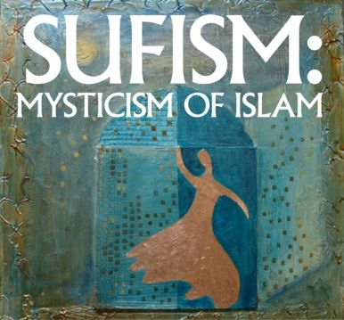

A detailed exploration of the philosophical traditions of the Islamic
and Persian worlds—examining how thinkers approached questions of
reason, revelation, existence, knowledge, ethics, and the relationship
between philosophy and faith.
Avicennism
Avicennism synthesized Aristotelian logic and Neoplatonic metaphysics
with Islamic theology, profoundly shaping both Eastern and Western
thought.
Avicennism is the philosophical system founded by the 11th-century
Persian polymath Ibn Sina (known in the West as Avicenna). Operating
during the Islamic Golden Age, Ibn Sina sought to create a comprehensive
philosophical system that reconciled the rigorous logic and natural
philosophy of Aristotle with the emanationist metaphysics of
Neoplatonism and the monotheistic theology of Islam. His framework
became the dominant paradigm of Falsafa (Islamic philosophy)
for centuries.
At the core of Avicennism is the groundbreaking metaphysical distinction
between "essence" (what a thing is) and "existence" (that a thing is).
Ibn Sina argued that for all worldly things, existence is an accident
added to their essence; they are "contingent" beings. Therefore, the
universe requires a "Necessary Existent" (God)—a being whose very
essence is existence itself—to impart existence to everything else. This
cosmological argument became a cornerstone of both Islamic and later
Christian medieval philosophy.
Key Principles
Essence vs. Existence — the fundamental metaphysical
distinction that explains the difference between contingent worldly
beings and the absolute Necessary Existent
The Necessary Existent (Wajib al-Wujud) — the concept
of God as the uncaused First Cause whose existence is necessary and
self-sustaining
Emanationism — the Neoplatonic idea that the universe
naturally and eternally flows out from God's abundant intellect,
rather than being created in a single moment of time
The Active Intellect — a cosmic intelligence that
acts as a bridge between the heavenly spheres and human minds,
illuminating human thought and granting knowledge
Major Works
The Book of Healing (Kitab al-Shifa) — A monumental
encyclopedia of science and philosophy
The Canon of Medicine (Al-Qanun fi al-Tibb) — While a medical
text, it reflects his systematic, philosophical approach to science
The Book of Salvation (Kitab al-Najat)
Influence
Avicennism was arguably the most influential philosophical system in the
medieval world. In the Islamic East, it set the agenda for all future
theological and philosophical debates. When his works were translated
into Latin in the 12th century, they fundamentally shaped European
Scholasticism, directly influencing Thomas Aquinas and the Catholic
understanding of God.
Common Misconception
A common historical misconception is that Ibn Sina was merely a
"translator" or "commentator" on Aristotle. In reality, Avicennism is a
highly original synthesis. Ibn Sina heavily modified Aristotelian
thought, introducing entirely new metaphysical concepts (like the
essence/existence divide) to make Greek philosophy compatible with
monotheistic creation.
Averroism
Averroism strictly championed Aristotelian rationalism, arguing that
philosophy and religion are just two different ways of expressing the
same singular truth.
Averroism stems from the teachings of the 12th-century Andalusian-Arab
philosopher Ibn Rushd (known in Latin as Averroes). Living in Islamic
Spain, Ibn Rushd was a fierce defender of pure Aristotelianism against
the criticisms of Islamic theologians (particularly Al-Ghazali) and the
Neoplatonic additions made by earlier philosophers like Avicenna. He
believed Aristotle was the ultimate pinnacle of human intellectual
achievement.
Ibn Rushd's most critical project was demonstrating the harmony between
philosophy and religion. He argued that the Quran actually commands
Muslims to study the natural world through reason. If philosophical
demonstration contradicts a literal reading of scripture, Ibn Rushd
argued, the scripture must be interpreted allegorically. However, some
of his strict Aristotelian conclusions—such as the eternity of the
universe and the idea that all humans share one collective active
intellect—sparked massive controversy in both the Islamic and Christian
worlds.
Key Principles
Harmony of Religion and Philosophy — the belief that
truth cannot contradict truth; philosophical reason and divine
revelation are parallel paths to the same ultimate reality
Eternity of the World — the Aristotelian view that
matter and the universe have always existed alongside God, rather than
being created from nothing at a specific point in time
Unity of the Intellect — the controversial theory
that all human beings share a single, universal active intellect,
rather than having entirely separate, immortal intellectual souls
Major Works
The Incoherence of the Incoherence (Tahafut al-Tahafut) — A
defense of philosophy against Al-Ghazali's attacks
The Decisive Treatise (Fasl al-Maqal) — A legal and
theological justification for the study of philosophy
Extensive Commentaries on Aristotle
Influence
While Averroism eventually waned in the Islamic world, it ignited a
philosophical revolution in Europe. "Latin Averroism," championed by
thinkers like Siger of Brabant at the University of Paris, popularized
the strict separation of philosophical reason from theological dogma,
laying the deep intellectual groundwork for the European Renaissance and
the Enlightenment.
Common Misconception
In Medieval Europe, Averroes was falsely accused of teaching the "Double
Truth" theory—the idea that something can be true in philosophy but
completely false in religion (and vice versa). Ibn Rushd never taught
this. He firmly believed there is only one truth, but that it
is communicated in complex logic for philosophers and in poetic,
allegorical imagery for the general masses.
Illuminationism
Illuminationism replaces traditional physical metaphysics with a
cosmos constructed entirely of varying degrees of light and darkness.
Illuminationism (Hikmat al-Ishraq) is a Persian philosophical
school founded in the 12th century by Shahab al-Din Suhrawardi.
Dissatisfied with the dry, purely logical and peripatetic (Aristotelian)
philosophy of Avicenna, Suhrawardi sought to create a system that
integrated rigorous rational analysis with direct, intuitive spiritual
experience. He drew deeply upon ancient pre-Islamic Zoroastrian
symbolism, Neoplatonism, and Sufi mysticism.
In Illuminationist philosophy, the fundamental building blocks of
reality are not "matter and form," but "light and darkness." God is the
"Light of Lights" (Nur al-Anwar), a singular, self-evident absolute
brightness. All other beings in the universe—from angels to human souls
to physical objects—are merely varying degrees of illumination emanating
from this supreme source. True philosophical knowledge, therefore,
cannot be gained merely by reading books; it requires purifying the soul
so it can "taste" or directly witness this divine light.
Key Principles
The Light of Lights — the ultimate, self-aware divine
source from which all existence radiates
Metaphysics of Light — the rejection of Aristotelian
matter in favor of a reality where things differ only in their degree
of luminosity or obscurity
Knowledge by Presence (Ilm al-Huduri) — the concept
of direct, intuitive, and unmediated knowledge, compared to the
indirect, abstract knowledge gained through logic
Spiritual Cosmology — a vast hierarchy of angelic
lights that govern the mechanics of the physical universe
Major Works
The Philosophy of Illumination (Hikmat al-Ishraq) —
Suhrawardi's magnum opus
The Shape of Light (Hayakil al-Nur) — Suhrawardi
Influence
While largely ignored in the West, Illuminationism became massively
influential in the Persian and broader Eastern Islamic world. It bridged
the gap between orthodox philosophy and mystical Sufism, establishing
the intellectual foundation for the School of Isfahan and directly
paving the way for Mulla Sadra's later philosophical syntheses.
Common Misconception
Because of its mystical vocabulary and emphasis on "light,"
Illuminationism is often wrongly categorized as pure poetry or
irrational mysticism. In reality, Suhrawardi was a brilliant logician
who heavily critiqued Avicennian logic. His system is highly structured,
arguing that intuitive mystical visions must still be subjected to
rigorous logical verification.
Sufism

Sufism is the inner, mystical dimension of Islam, focusing on the
purification of the heart and the direct experience of divine love and
unity.
Sufism (Tasawwuf) is the esoteric and mystical tradition of
Islam. While Falsafa (philosophy) uses logic to understand God,
and Kalam (theology) uses scripture and dialectics to defend
God, Sufism uses asceticism, meditation, and spiritual poetry to
directly experience God. Emerging in the early centuries of Islam as a
reaction against the worldliness of the expanding Islamic empires,
Sufism focuses on the inward search for the divine truth (Haqiqah).
Sufis believe that the human ego (Nafs) creates an illusion of
separation between the individual and the Creator. By following a
spiritual path (Tariqa) under the guidance of a master, a seeker
undergoes intense purification of the heart. The ultimate philosophical
and spiritual goal is Fanaa (the annihilation of the ego)
followed by Baqaa (subsistence in God), realizing the absolute
metaphysical oneness of being, where the lover, the beloved, and the
love itself become indistinguishable.
Key Principles
Tawhid (Oneness) — interpreted mystically as
Wahdat al-Wujud (the Unity of Being), the idea that nothing
truly exists except the Divine
Fanaa and Baqaa — the psychological and spiritual
destruction of the selfish ego, allowing the soul to live continuously
in the presence of God
Dhikr (Remembrance) — meditative practices, chanting,
and breathing techniques designed to keep the mind constantly focused
on God
Divine Love (Ishq) — the driving force of the
universe, prioritizing ecstatic love and longing for God over dry
legalistic obedience
Major Works
The Masnavi — Jalal al-Din Rumi (a vast poem widely
considered the pinnacle of Sufi literature)
The Bezels of Wisdom (Fusus al-Hikam) — Ibn Arabi (the most
complex philosophical defense of the Unity of Being)
The Alchemy of Happiness — Al-Ghazali
Influence
Sufism was the primary vehicle for the peaceful spread of Islam into
South Asia, Central Asia, and Africa. Its literary output—particularly
the poetry of Rumi, Hafiz, and Attar—represents some of the highest
achievements in world literature and continues to inspire millions
globally across religious boundaries.
Common Misconception
In the modern West, Sufism is frequently divorced from its Islamic roots
and treated as a generic, New Age spiritualism or a separate religion
entirely. Historically and practically, however, Sufism is deeply
embedded in the Quran and the practices of the Prophet Muhammad; most
traditional Sufis are strict adherents to Islamic law (Sharia), viewing
it as the necessary foundation for esoteric practice.
Kalam
Kalam is the Islamic discipline of speculative theology, using
dialectic reasoning to defend religious doctrine against pure
rationalist philosophy.
Kalam (literally "speech" or "discourse") is the Islamic
scholastic tradition of defensive theology. It emerged as a discipline
when early Muslims needed to rationally defend their faith against
external critics (like Christians and Zoroastrians) and internal
heterodoxies. Unlike the philosophers (Falasifa) who started
from Greek first principles and reasoned their way forward, the
practitioners of Kalam (Mutakallimun) started with the absolute
truth of Quranic revelation and used rigorous dialectic logic to defend
it.
The tradition was dominated by major schools, most notably the
Mu'tazilites (who championed absolute rationalism and free will) and the
Ash'arites (who prioritized God's absolute power and sovereignty). To
counter Aristotelian physics, Ash'arite Kalam developed a fascinating
worldview known as "Occasionalism"—an atomistic theory arguing that the
universe is made of discrete atoms that have no causal power over one
another. Instead, God recreates the entire universe in every single
instant, meaning the "laws of nature" are just God's habits.
Key Principles
Defensive Apologetics — the use of rational
argumentation specifically designed to protect orthodoxy from heresy
and philosophical overreach
Occasionalism (Ash'arism) — the doctrine that natural
cause and effect is an illusion; fire does not burn cotton, rather,
God creates the burning exactly when the fire touches the cotton
Divine Attributes vs. Divine Unity — deep
philosophical debates over how God can have attributes (like sight,
hearing, speech) without violating His absolute oneness
Kasb (Acquisition) — the Ash'arite attempt to
reconcile God's absolute predestination with human moral
responsibility
Major Works
The Incoherence of the Philosophers (Tahafut al-Falasifa) —
Al-Ghazali (A devastating critique of Avicennian philosophy)
Kitab al-Tawhid — Abu Mansur al-Maturidi
Al-Ibanah — Abu al-Hasan al-Ash'ari
Influence
The Ash'arite and Maturidite schools of Kalam successfully defined the
boundaries of orthodox Sunni theology that are still accepted by the
vast majority of Muslims today. Furthermore, Al-Ghazali's critiques in
his Incoherence successfully forced later Islamic philosophers
to significantly elevate the rigor of their own systems to survive.
Common Misconception
It is often said that Al-Ghazali and the Kalam theologians "destroyed"
science and philosophy in the Islamic world by promoting
anti-rationalism. This is a severe oversimplification. Al-Ghazali
himself was a master logician who merely argued that science and
philosophy could not answer ultimate metaphysical questions with
certainty, setting boundaries for reason much like Immanuel Kant did
centuries later in Europe.
Transcendent Theosophy
Transcendent Theosophy is a grand synthesis of Islamic thought,
arguing that reality is not composed of fixed objects, but of a
single, fluid continuum of existence.
Transcendent Theosophy (Al-Hikmat al-Muta’aliyah) is the
philosophical masterpiece of the 17th-century Persian philosopher Sadr
al-Din al-Shirazi, better known as Mulla Sadra. Emerging during the
Safavid Empire, Mulla Sadra achieved what previous thinkers thought
impossible: he flawlessly synthesized Avicennian logic, Suhrawardian
Illuminationism, Ibn Arabi's Sufi mysticism, and Shi'ite theological
revelation into a single, cohesive meta-system.
Mulla Sadra revolutionized metaphysics by completely overturning
Avicenna's worldview. Where Avicenna argued that "essence" is
fundamental, Sadra championed the "Primacy of Existence" (Asalat
al-Wujud). He argued that essences (like "treeness" or "humanness") are
just mental illusions; the only thing that is truly real is the pure,
flowing act of Existence itself. Furthermore, he introduced "Substantial
Motion," arguing that the universe is not static, but rather a dynamic,
evolutionary process constantly upgrading itself toward higher states of
being and eventually returning to God.
Key Principles
Primacy of Existence (Asalat al-Wujud) — the radical
idea that existence is the only true reality, and all distinctions
between objects are just differing intensities of existence
Substantial Motion (Harakat al-Jawhariyya) — the
doctrine that the very substance of the universe is in a constant
state of evolutionary flux, moving from pure matter toward spiritual
consciousness
Unity of the Knower and the Known — the
epistemological theory that in the act of true knowing, the human mind
physically and spiritually becomes one with the object it understands
The Four Journeys — a metaphor for the soul's
intellectual and spiritual evolution: from creation to God, in God,
back to creation with God, and in creation with God.
Major Works
The Transcendent Philosophy of the Four Journeys of the Intellect
(Al-Asfar)
— Mulla Sadra's monumental philosophical encyclopedia
The Book of Metaphysical Penetrations (Kitab al-Mashair) —
Mulla Sadra
Influence
Mulla Sadra's Transcendent Theosophy became the absolute foundation of
modern Shi'ite Islamic philosophy. It has profoundly influenced modern
political and spiritual thought in Iran, heavily impacting the
intellectual frameworks of figures like Allamah Tabataba'i and Ayatollah
Ruhollah Khomeini.
Common Misconception
A deeply entrenched narrative in Western academia is that Islamic
philosophy essentially died in the 12th century after the clash between
Al-Ghazali and Averroes. Mulla Sadra is the ultimate proof that this is
false. Islamic philosophy merely migrated eastward to Persia, where it
evolved into much more sophisticated, mystical, and dynamic forms that
continue to be taught in traditional seminaries today.
Continue Into the Enlightenment
As philosophical thought continued to evolve, European thinkers
increasingly emphasized reason, experience, individual liberty,
political authority, and human progress. Explore the schools and
movements that shaped Enlightenment philosophy.